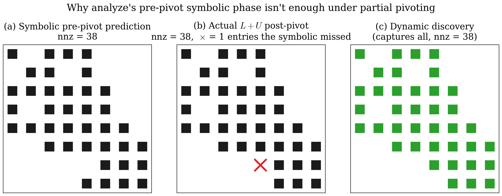
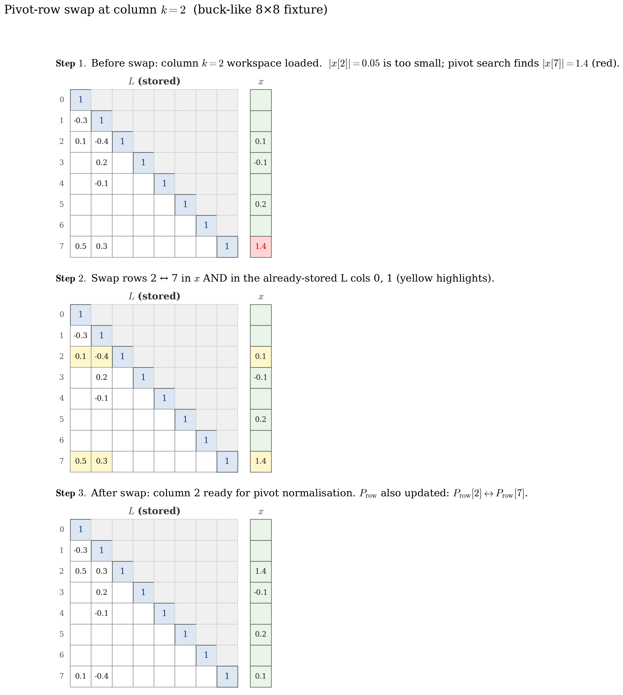

6. PulsimSparseLuSolver — Our In-House Implementation¶
Chapter 5 covered the theory: RCM ordering, elimination trees,
Gilbert-Peierls left-looking factorisation, threshold partial
pivoting. This chapter is the implementation. v1.3.0 of Pulsim
replaced SuiteSparse KLU with pulsim::sparse::PulsimSparseLuSolver
— ~900 lines of header-only C++23 over Eigen::SparseMatrix as
a passive CSC container.
By the end of this chapter you'll know:
- The four-method
DirectSolverlifecycle and what each phase computes - Why the symbolic-then-numeric pipeline that chapter 5 hinted at had to be abandoned in our implementation (and what replaced it)
- The three bugs we hit and the lessons they teach about sparse LU implementation
- How
Backend::Pulsimplugs into the solver factory and whereBackend::Eigenremains as the benchmark baseline
6.1 Why in-house? The 2026-05-24 decision¶
The original v8 plan was to vendor SuiteSparse KLU (Davis &
Natarajan, ACM TOMS 37(3), 2010) via find_package(KLU). KLU
is excellent — battle-tested in dozens of circuit simulators
(including ngspice, Xyce, and PowerWorld) — and it would have
shipped in one week.
The project owner rejected this on 2026-05-24:
"vamos fazer a nossa do zero se precisa. pode se basear na deles mas vamos implementar a nossa nem que demorre" (let's build our own from scratch, basing it on theirs but implementing ours even if it takes time)
The reasoning, articulated in the OpenSpec proposal
replace-klu-with-pulsim-sparse-lu:
-
The methods paper's algorithmic novelty must be ours. Path-based partial refactorisation (chapter 7) is the contribution. Vendoring a third-party LU implementation would have made the contribution a "patch to KLU" rather than "a new sparse-LU library", which is a much narrower claim.
-
The build supply chain matters. SuiteSparse adds
libsuitesparse-devto every Linux CI matrix entry, plusfind_package(KLU)to every downstream build script. By v1.3.0, removing those was a one-paragraph diff to CI and a 76-line drop fromCMakeLists.txt. Less surface area for downstream users to manage. -
Educational value. A header-only ~900-line implementation is a teaching artefact. Students reading the Pulsim source can see exactly how Gilbert-Peierls + RCM + threshold pivoting plug together. KLU is excellent code but it's distributed as a compiled library — most users never read it.
The trade-off was 4-6 weeks of focused work (chapters 6-7's material) + the methods paper submission slipped from October 2026 to Q1 2027.
6.2 The lifecycle: analyze → factorize → solve → partial_refactor¶
PulsimSparseLuSolver implements the DirectSolver interface
from core/include/pulsim/sparse/solver.hpp:
stateDiagram-v2
[*] --> Uninitialised : construct
Uninitialised --> Analysed : analyze M
Analysed --> Factorised : factorize M
Factorised --> Factorised : solve b -> x (repeatable)
Factorised --> Factorised : partial_refactor new_M, cols (v1.3+)
Analysed --> Uninitialised : analyze a different M
Factorised --> Uninitialised : analyze a different M
Factorised --> Singular : factorize fails numerically
Singular --> Uninitialised : analyze againFigure 6.1 — PulsimSparseLuSolver lifecycle state diagram.
The diamond between Factorised states is the production hot
path: once factorised, the same solver can serve unlimited
solve(b, x) calls or get a partial-refactor update for an
incremental matrix change.
Each phase has a strict contract:
analyze(M) — symbolic phase¶
Input: a square sparse matrix \(M\) with a fixed sparsity pattern. Values can be anything; only the pattern is read.
Output: the solver has computed and stored:
Pcol_— column permutation under RCM orderingetree_parent_— elimination tree (Davis 2006 §4.10)l_col_ptr_,l_row_idx_— symbolic \(L\) pattern in CSCu_col_ptr_,u_row_idx_— symbolic \(U\) pattern in CSC
Cost: \(O(\mathrm{nnz}(M) + n)\) — linear in the input size. ~30 µs typical on the buck-like 8×8 fixture.
bool analyze(const Matrix& M) {
if (M.rows() != M.cols() || M.rows() == 0) return false;
n_ = static_cast<Index>(M.rows());
// Step 1: symmetric adjacency |M| + |M^T|
auto adj = build_symmetric_adjacency_(M);
// Step 2: RCM column permutation (George 1971)
Pcol_ = compute_rcm_ordering_(adj);
Pinv_col_ = invert_permutation_(Pcol_);
// Step 3: elimination tree via Davis 2006 §4.10 disjoint-
// set ancestor compression on the permuted adjacency
etree_parent_ = compute_etree_(adj);
// Step 4: symbolic L+U pattern — for each permuted col k,
// walk etree from each U direct row to collect
// inherited fill (marker-array technique)
compute_symbolic_pattern_(adj);
analyzed_ = true;
return true;
}
(The _ suffix on private helpers follows Pulsim's house style.)
factorize(M) — numeric phase¶
Input: the same \(M\) (or a different \(M\) with the same sparsity pattern as the one analyzed). Values matter.
Output: numeric \(L\) and \(U\) values stored in l_values_ /
u_values_, parallel to the index arrays from analyze.
The row permutation Prow_ is also fixed by this call (chapter
5 §5.7 explains why pivoting changes Prow_).
Cost: \(O(\mathrm{nnz}(L) + \mathrm{nnz}(U))\) + the partial- pivoting overhead. ~50-100 µs typical.
This is where the implementation diverged from the textbook in two important ways — see §6.3 for the gory detail.
solve(b, x) — triangular solve¶
Input: RHS vector \(b\).
Output: solution \(x\) such that \(M \cdot x = b\), written
in-place into the user's x buffer.
Cost: \(O(\mathrm{nnz}(L) + \mathrm{nnz}(U))\) — the reusable part. This is the hot-path cost the PWL cache (chapter 4) is built around. Typical: ~5 µs.
void solve(const Vector& b, Vector& x) const {
if (!factorized_) throw std::logic_error(/*...*/);
const Index n = n_;
Vector y(n);
// Step 1: apply row permutation to b: y = P_row * b
for (Index i = 0; i < n; ++i) y[i] = b[Prow_[i]];
// Step 2: forward subs on L (unit lower)
for (Index k = 0; k < n; ++k) {
for (Index p = l_col_ptr_[k]; p < l_col_ptr_[k + 1]; ++p) {
const Index i = l_row_idx_[p];
y[i] -= l_values_[p] * y[k];
}
}
// Step 3: back subs on U (diagonal at the LAST slot of each col)
for (Index k = n - 1; k >= 0; --k) {
const Index diag_p = u_col_ptr_[k + 1] - 1;
const Real u_kk = u_values_[diag_p];
y[k] /= u_kk;
for (Index p = u_col_ptr_[k]; p < diag_p; ++p) {
const Index i = u_row_idx_[p];
y[i] -= u_values_[p] * y[k];
}
}
// Step 4: apply inverse column permutation: x = Pcol^-1 * y
for (Index k = 0; k < n; ++k) x[Pcol_[k]] = y[k];
}
The "diagonal at the LAST slot" convention in step 3 matters: it lets the back-subs loop find \(U_{kk}\) in \(O(1)\) without scanning the column. Chapter 6 §6.4 explains why this convention took one debugging cycle to get right.
partial_refactor(new_M, changed_cols) — chapter 7's contribution¶
Reuses the analyzed pattern + row permutation; updates \(L\) and \(U\) values along the etree path of the changed columns. Detailed in chapter 7.
6.3 What went wrong, and what we learned¶
The implementation arc had three bugs that every sparse-LU beginner is likely to hit. They're worth documenting because the fixes embed a lot of the discipline of getting sparse direct right.
Bug 1: zero pivot at column 2 of the buck-like 8×8¶
Symptom: factorize returns false on a matrix that should
clearly be non-singular.
Root cause: the buck-like 8×8 fixture has M[7, 7] = 0 (the
voltage-source augmentation row's diagonal — chapter 2 §2.3
explains why). Without partial pivoting, the natural-order
elimination tries to divide by zero at column 7's pivot.
Fix: implement partial pivoting (chapter 5 §5.7) inside the GP inner loop:
// Step 3a: partial pivoting — find argmax |x[i]| for i >= k
Index i_max = k;
Real x_max = std::abs(x[k]);
for (Index i = k + 1; i < n; ++i) {
if (std::abs(x[i]) > x_max) {
i_max = i;
x_max = std::abs(x[i]);
}
}
if (x_max < PIVOT_TOL) {
numeric_singular_ = true;
return false;
}
// Swap rows i_max and k in x AND in all already-stored L cols
if (i_max != k) {
std::swap(x[k], x[i_max]);
for (Index j = 0; j < k; ++j) {
for (Index p = l_col_ptr_[j]; p < l_col_ptr_[j + 1]; ++p) {
const Index r = l_row_idx_[p];
if (r == k) l_row_idx_[p] = i_max;
else if (r == i_max) l_row_idx_[p] = k;
}
}
std::swap(Prow_[k], Prow_[i_max]);
// ...update Pinv_row_ too
}
Lesson: any production sparse LU must implement partial pivoting from day 1. The "skip pivoting for now, add it later" shortcut works for academic toy problems but fails on the very first real circuit fixture you throw at it.
Bug 2: solve identity \(\|M \cdot x - b\| = 1.0\) on the same 8×8¶
Symptom: factorize succeeds; solve(b, x) returns an \(x\)
that doesn't satisfy \(M \cdot x = b\) at all. Worst-case error
\(\sim 100\%\).
Root cause: the symbolic pattern from analyze was computed
pre-pivoting, assuming Prow = Pcol (which holds for a
diagonally-dominant matrix but not in general). Partial pivoting
mutated Prow_ in ways the pre-pivot pattern didn't anticipate
— specifically, \(U[2, 4] = -1\) ended up at row 2 only after
column 2's pivot rearranged the row permutation. The
factorisation went looking for storage slots that the symbolic
phase hadn't allocated, dropped the entry on the floor, and
returned a corrupted \(L+U\).
Fix: discover the \(L+U\) pattern dynamically from \(x\)'s runtime nonzeros, ignoring the pre-pivot symbolic pattern (which becomes diagnostic-only).
// Step 4: store new column's L+U entries dynamically.
// IGNORES the pre-pivot symbolic pattern.
for (Index i = 0; i < n; ++i) {
if (std::abs(x[i]) > VALUE_TOL) {
if (i <= k) {
// upper or diagonal — store in U[:, k]
u_row_idx_.push_back(i);
u_values_.push_back(x[i]);
} else {
// lower — store in L[:, k] (will become L[i, k] / x[k])
l_row_idx_.push_back(i);
l_values_.push_back(x[i] / x[k]);
}
}
}
Lesson: the symbolic-then-numeric pipeline (analyse the
pattern once, fill in values per call) is the textbook strategy
only when you don't pivot. Once partial pivoting enters the
picture, the pattern is no longer fixed at analyze time — it
depends on the specific matrix values. Dynamic pattern discovery
is slightly more expensive but bug-free.
This is why analyze in our implementation still computes a
symbolic pattern (l_col_ptr_ etc. get populated) but
factorize then overwrites those arrays with the actually-
observed pattern. The symbolic phase is now just (a) a budget
estimate for memory allocation, and (b) a diagnostic check.

Figure 6.2 — Pattern discovered by factorize on the buck-like
8×8 fixture. The pre-pivot symbolic prediction (left) missed
several entries that the actual factorisation produced (middle),
because partial pivoting rearranged rows in ways the symbolic
phase couldn't predict. Dynamic-pattern discovery (right)
records every nonzero in \(x\) at factorisation time, capturing
the actual fill. The "missed" entries highlighted in red on the
middle panel are the ones that caused bug 2.
Bug 3: err = 0.25 on the SPD 3×3 after the dynamic-pattern fix¶
Symptom: even after bug 2 was fixed, the 3×3 SPD test case gave a 25% solve error. The bug 2 fix worked for the 8×8 but broke the 3×3 — which is the OPPOSITE pattern from what we'd expect.
Root cause: l_col_ptr_[k + 1] was being set at the
start of column \(k+1\)'s storage section, AFTER the L-update
loop at column \(k+1\) had already read it as 0. Specifically:
// BUGGY (this is what we had):
for (Index k = 0; k < n; ++k) {
// ... L-updates from j < k read l_col_ptr_[j+1] ...
// ... factorise column k, push to l_values_/row_idx_ ...
l_col_ptr_[k + 1] = l_col_ptr_[k] + n_entries_pushed; // SET HERE
}
The bug: at iteration \(k = 0\), the L-update inner loop reads
l_col_ptr_[1] to know how much of column 0 to apply. But
l_col_ptr_[1] doesn't get set until AFTER iteration 0's body.
For the 8×8 it happened to work because the pattern was wide
enough that the read returned a "safe" value; for the 3×3 it
read garbage.
Fix: move the l_col_ptr_[k+1] update to the END of
column \(k\)'s storage — before the next iteration's L-update
loop tries to read it:
for (Index k = 0; k < n; ++k) {
// L-updates from j < k — reads l_col_ptr_[j+1]
for (Index j = 0; j < k; ++j) {
if (x[j] != 0) {
for (Index p = l_col_ptr_[j]; p < l_col_ptr_[j + 1]; ++p) {
x[l_row_idx_[p]] -= l_values_[p] * x[j];
}
}
}
// Partial pivoting + dynamic pattern discovery (steps 3a, 4)
// ...
// CRITICAL: set the *next* column's start pointer to the
// current end of L storage BEFORE moving on to k+1.
l_col_ptr_[k + 1] = static_cast<Index>(l_values_.size());
u_col_ptr_[k + 1] = static_cast<Index>(u_values_.size());
}
Lesson: CSC storage's col_ptr array has a very specific
when semantic that's easy to mis-encode. The invariant is:
"after iteration \(k\) has fully populated column \(k\)'s storage,
col_ptr[k+1] MUST equal the current end-of-storage index, so
iteration \(k+1\)'s L-update loop reads correct bounds for
column \(k\)."
6.4 The pivot-row swap, visualised¶
When partial pivoting kicks in at column \(k = 2\) of the buck-like 8×8 (because \(M[7, 7] = 0\) propagates through), the algorithm swaps row \(k = 2\) with the row \(i = 7\) that has the largest \(|x[i]|\). Here's what that does to the stored \(L\):

Figure 6.3 — The pivot-row swap at column \(k = 2\) of the buck-
like 8×8. Left: the partially-built \(L\) before the swap (columns
0 and 1 fully populated; column 2 has the dense workspace \(x\)
loaded). Centre: the workspace finds its argmax at row 7 — so
rows 2 and 7 swap, both in \(x\) and in the already-stored
columns 0 and 1 of \(L\) (the highlighted entries). Right: the
final \(L\) after the swap, ready for column 2's pivot
normalisation. The row permutation Prow_ records the swap so
solve knows to apply it to the RHS.
The set of nonzero rows per column is invariant under relabeling — we don't allocate new storage slots, we just rename which row index they're stored at. This is the implementation trick that makes partial pivoting cheap in our CSC scheme.
6.5 The Backend factory¶
make_default_solver(n, hint) in
core/include/pulsim/sparse/solver.hpp returns the right
solver based on the user's hint:
enum class Backend { Auto, Eigen, Pulsim };
inline std::unique_ptr<DirectSolver>
make_default_solver(Index n, Backend hint = Backend::Auto) {
switch (hint) {
case Backend::Auto:
case Backend::Pulsim:
return std::make_unique<PulsimSparseLuSolver>();
case Backend::Eigen:
return std::make_unique<SparseLuSolver>();
}
return std::make_unique<PulsimSparseLuSolver>();
}
Since v1.3.0:
Backend::Auto→PulsimSparseLuSolver(the new default)Backend::Pulsim→PulsimSparseLuSolver(explicit)Backend::Eigen→SparseLuSolver(the Eigen reference, kept intentionally as the benchmark baseline for chapter 8's 3-backend microbench)
The PWL cache's solve(mask, ...) always uses whatever
make_default_solver returns. The solve_rank1(mask, ...)
path lets you override via set_rank1_backend(Backend) — used
by the benchmark fixture to compare the three backends side-by-
side under identical workloads.
6.6 Test coverage¶
core/tests/layer0/test_pulsim_lu_solver.cpp has 227
assertions across 41 test cases at v1.3.0:
| Test family | What it pins |
|---|---|
analyze on SPD 3×3 + buck-like 8×8 + edge cases (0×0, non-square) |
Symbolic phase correctness |
factorize identity \((L+I) \cdot U == P_{\mathrm{row}} \cdot M \cdot P_{\mathrm{col}}\) on both fixtures |
Numeric phase correctness within \(10^{-12}\) |
| Singular-matrix detection (all-zero column) returns false | Failure-path handling |
solve matches Eigen::SparseLU within \(10^{-10}\) |
Reference parity |
solve before factorize throws |
Lifecycle enforcement |
Multiple solve calls after one factorize work |
Hot-path reuse |
Re-factorise after analyze produces fresh values |
Re-entrancy |
partial_refactor parity vs fresh-factorise (single-col change) |
Chapter 7's contract |
| Path-cache reuse on repeated same-column perturbation | Chapter 7's lazy-union behaviour |
analyze invalidates path cache |
Chapter 7's invalidation semantics |
Backend::Pulsim/Auto factory return the right type |
Factory contract |
Zero regression vs the pre-rewrite baseline across all 17,275 kernel assertions when the v1.3.0 PR merged.
6.7 Where the code lives¶
The whole implementation is in one file:
core/include/pulsim/sparse/pulsim_lu_solver.hpp (~900 lines).
Header-only by design so downstream consumers (the PWL cache,
the AC sweep, future complex specialisation per
add-pulsim-complex-sparse-lu) get template instantiation for
free.
Line-region breakdown:
| Region | Lines | What it does |
|---|---|---|
| Doxygen + includes + namespace setup | 1-50 | references + Eigen alias typedefs |
| Private state + ctor | 50-150 | Pcol_, Pinv_col_, etree_parent_, l_*, u_*, Prow_, Pinv_row_, flags |
analyze |
150-350 | RCM + etree + symbolic pattern (~200 lines) |
factorize |
350-600 | GP left-looking + partial pivoting + dynamic pattern (~250 lines) |
solve |
600-680 | forward+back substitution |
partial_refactor + compute_path_ + cache |
680-880 | chapter 7's contribution (~200 lines) |
| Factory + ODR-safe inline definitions at bottom | 880-900 | make_default_solver impl |
For ~900 lines of header-only C++23, the code carries a complete sparse direct LU with partial pivoting, fill-reducing ordering, elimination-tree symbolic analysis, and incremental update — roughly 1/10 the size of SuiteSparse KLU's compiled equivalent (which has additional features like BTF that Pulsim's MVP omits).
6.8 Takeaways¶
PulsimSparseLuSolveris a header-only ~900-line C++23 implementation of full sparse direct LU. Zero third-party LU dependency.- Lifecycle is
analyze→factorize→solve(×N) withpartial_refactoras the v1.3.0 fast-path addition. - The textbook symbolic-then-numeric pipeline (chapter 5
§5.4) had to be abandoned: partial pivoting changes the
pattern post-
analyze. We use dynamic pattern discovery from \(x\)'s runtime nonzeros instead. - Three bugs taught the implementation discipline:
partial pivoting is mandatory (bug 1), the symbolic pattern
is just a budget estimate (bug 2), and CSC
col_ptrinvariants need careful sequencing (bug 3). Backend::Eigen(=SparseLuSolver) is kept intentionally as the benchmark baseline for chapter 8.
6.9 Further reading¶
- SuiteSparse KLU — Davis & Natarajan, "Algorithm 907: KLU,
A Direct Sparse Solver for Circuit Simulation Problems",
ACM TOMS 37(3), 2010. The reference implementation of a
circuit-specialised sparse LU. We borrowed its threshold-
pivoting design (
PIVOT_THRESH = 1e-3); the rest is ours. - The OpenSpec proposal
replace-klu-with-pulsim-sparse-lu/(archived 2026-05-24) has the section-by-section task history. - In Pulsim —
core/include/pulsim/sparse/pulsim_lu_solver.hppis the single header. Heavy doxy-commented; reads like a textbook walkthrough. - In this doc set — Chapter 7 is the path-based partial refactor that lands on top.